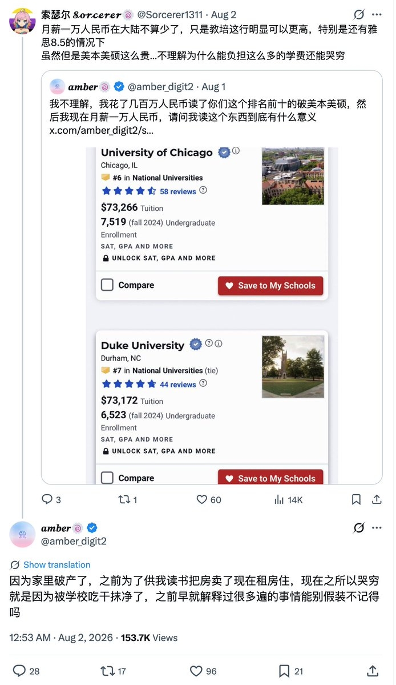

𝐀𝐬𝐡𝐥𝐞𝐲 𝐁𝐥𝐨𝐜𝐤🍥🌹🇹🇼🏳️⚧️🇪🇺
@bolckAshley
當大家還在爭論理科好還是文科好時
我們親愛的輝夜主席早在2025年6月28日就已經發表了「關於讓工農兵學員來發展社會的建議」的偉大見解👋

lidang 立党 （劝人卖房/学CS/买SP500/纳100/OpenAI/Anthrop第一人）
@lidangzzz
不要心疼任何一个读文科的人。
你自己天天吭哧吭哧写代码刷高数题的时候，这些人天天看看书、用chatgpt随手写一段小论文就完事儿了。
在美国读文科本硕到底有多爽，每天有多甜，有多少时间刷抖音看netflix和b站，每周吃几顿海底捞和麻辣香锅，周末爬几次山游几次泳逛几次街，只有他们自己知道。 https://t.co/8PnN7coeNz